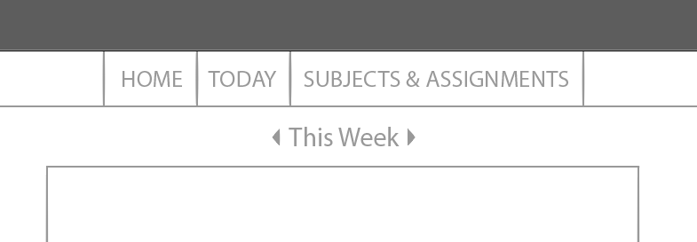
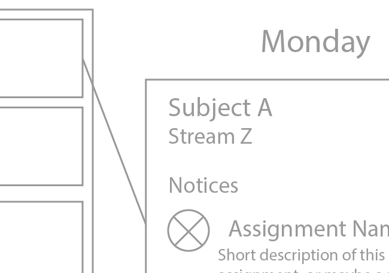
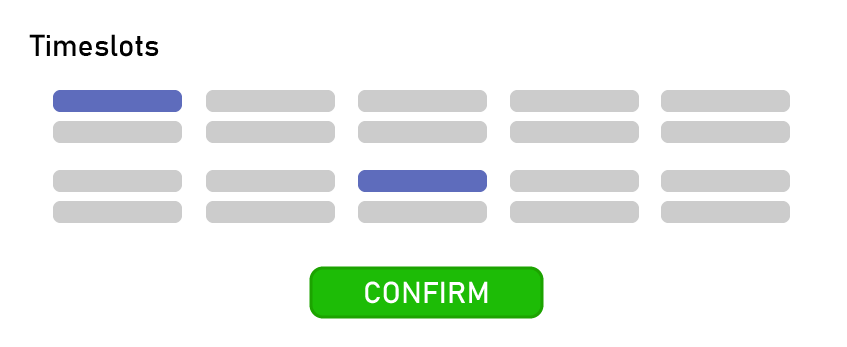

User Interface: Semester Tracker
Final Mockups

The Home page, displaying a weekly view of the user's timetable.

The Today page, showing the user their timetable for the day.

The Subjects & Assignments page, where the user can manage their subjects and set assignments for students.

A modal over the Subjects And Assignments page, displaying the UI for adding a subject.

A modal over the Subjects And Assignments page, displaying the UI for adding an assignment.
Wireframes

Development
Planning and Research
To begin with, I thought about what the main purpose of my application would be. It was meant to relay information about certain key, important dates to its user, without forcing them to have to perform a bunch of mental calculations to work out what those numerical dates translate to in real world days.
It seemed like a good start to research existing applications that deal with portraying days (and the events that fall on them) in an easy-to-digest manner.


As I'd suspected, there were a few key shared elements between these applications.
First was the sparing use of colour. It is reserved for two key purposes: first, establishing the application's brand, and second, visually distinguishing key dates from each other. Where possible, users are allowed to select these "labelling" colours themselves. A colour that someone chooses themselves is one that's easier for them to recognize later on down the line.
The other main similarity was how visually similar each individual day is. If one day is a monochromatic stripe and some words in a box, they all are. This helps to reinforce that any date is generally interchangeable with another. The functionality (the user is able to assign events any date they choose) is alluded to by the design.


With a basic direction to strive for, I encountered my first big decision: should I have my navigation bar on the left of the screen, or across the top? I drew out both possibilities to get a better sense of what it would look like.
Once I'd finished, it occurred to me that I could have the navigation bar change places based on which position best fit the content at the time-- across the top in the timetable view, then moving to the side when the user wanted to look at an individual day. However, the idea didn't pan out: it felt very strange to have the bar move between views, to the point that would have detracted from the visual experience of navigating through the application.
Ultimately, I chose to put the navigation bar across the top of the application. This favoured the timetable view over the single day view, which suited the implicit hierarchy between the two. The needs of many outweigh the few, to grossly misuse a theory of ethics so that I can justify my design choices.
Process: General
Next, I had to pick an application. For my purposes the choice was between Photoshop and Illustrator, since I don't have much experience with any of the other viable options. I picked Illustrator mostly because I'd used it to build a wireframe before, and I find it more intuitive to work with Illustrator's versions of the shape tools (especially when it comes to modifying paths).
With that out of the way, I decided to produce all of the wireframes and mockups in a single Adobe Illustrator document, to make copying and pasting between views as simple painless as possible. Each view was placed on its own artboard.
{kind=link}
{kind=link}
My layer structure consisted of two master layers, the "mockup" and "wireframe" layers, both with a large number of sublayers to hold all the elements. This allowed me to easily hide and reveal either layer at a time so that I could get a better look at what I was doing, and made it easy to export all of my deliverables once I was finished.
Process: Wireframes
During this step I mostly thought about alignment and spacing. My main concern was giving the elements enough padding to avoid making them feel claustrophobic for the user. One little thing I did that I thought was neat was making sure that the content of all five views was either significantly narrower or wider than the space taken up by the buttons on the navigation bar.
This was to subtly hint to the user that the two interfaces, while part of the same application, have very different goals from one another. The navigation bar is used to navigation between slices of content, while the content is what the user is actually here for. Later I doubled down on this by making the navigation bar completely blue.
The other cool thing I did in the wireframing process was experiment a little with line. Most of my attempts were ill-fitting, but one worked well enough to keep.
This solitary diagonal line was quite striking against the sea of squares behind it, and it really helped draw the eye from the left to the main point of interest-- the in-depth look at the course on the right. Like the navigation bar, I did wind up having to reinforce this effect with colour co-ordination once I got to the mockup phase.
Process: Mockups
This was the fun part, where I looked mainly at colour and font.
For colour, I wanted my application to be quite cool and easy to look at, especially since most use cases involve regular use. I'd heard that blue is generally the colour that the better-performing social media platforms favour, so I gave that a shot, and it worked well enough. Blue also has the advantage of being one of the easier colours to co-ordinate other colours with, since it can go with almost any other colour that exists.
With blue locked in, I had to settle on shade. It made sense to me to take this opportunity to further distinguish thead navigation bar from the application's actual content, so I went for quite a dark shade-- dark enough that the text would have to be white to be legible. This created an immediate dichotomy in the text itself: white words for navigation, black words for information.
My font choice was largely a happy accident. It's a solid, legible, sans-serif font that fits nicely with my minimalist design sensibilities, so I stuck with it. The only place I didn't use it in were the text boxes, since those almost always use the default Arial and I had no reason to change that.
One big thing I changed between my mockups and my wireframes was rounding out almost all of my rectangles. I found that this supported the clean, modern look that I was going for and helped to make the borders around most of my "course boxes" look a little less loud and aggressive (especially since I used such bright colours to help them stand out from their desaturated backgrounds).
This little time-slot selection interface is one thing that I think turned out really well. The spacing between the individual slots communicates a wealth of information about what they're even supposed to be without using any words at all: it greatly resembles the structure of the time table on the home page, down to the larger gap down the middle of the table to represent lunchtime.
Anyway, that's about everything. Hope you liked it!